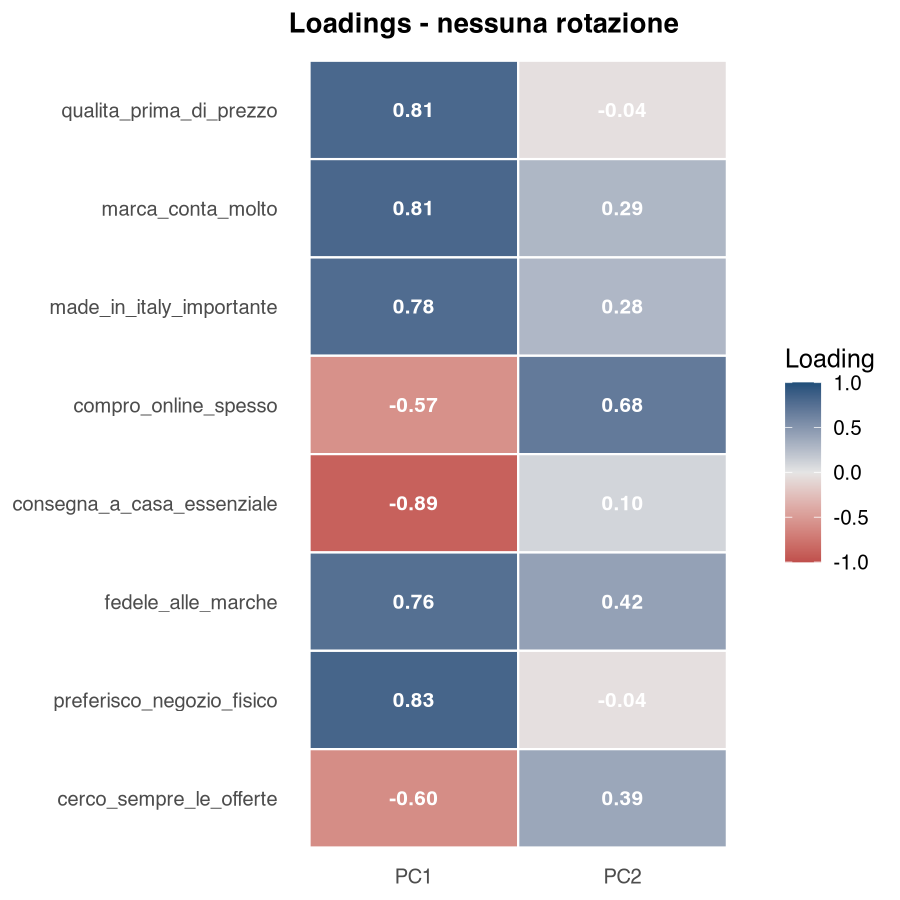
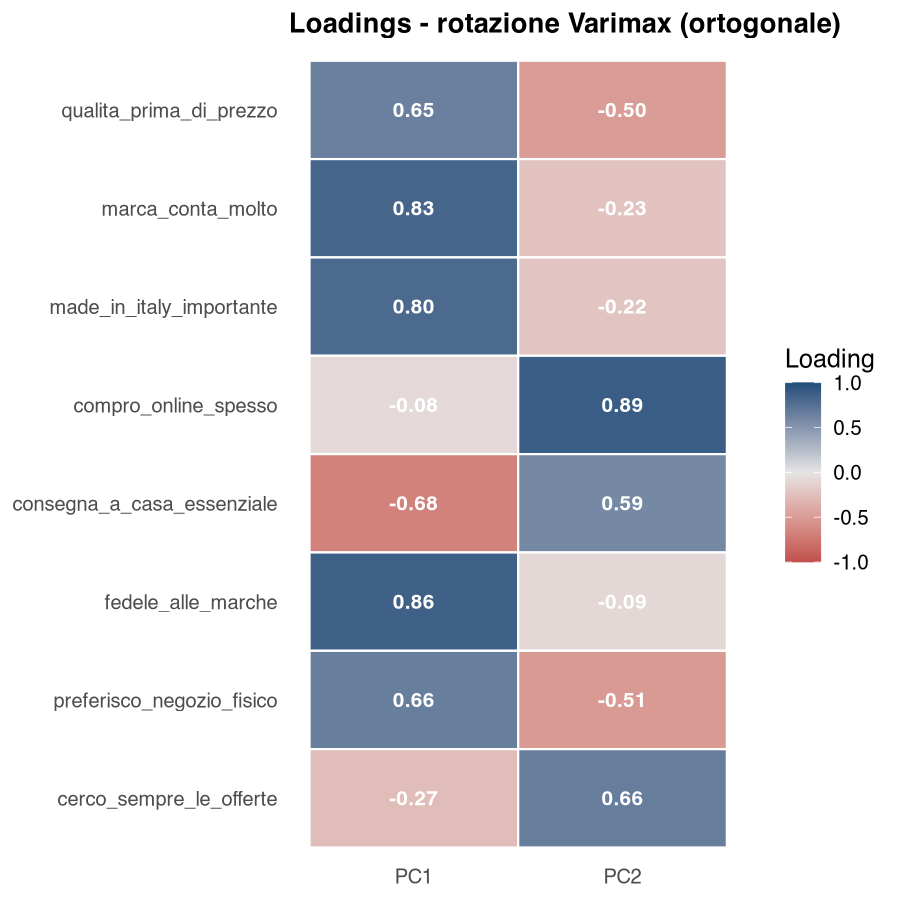
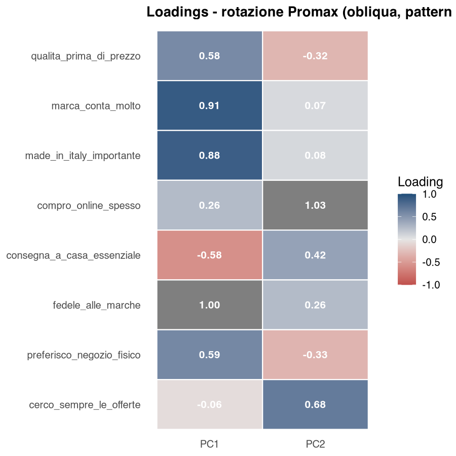

31 Rotazioni Varimax e Promax
Le rotazioni non modificano gli autovalori dell’Analisi delle Componenti Principali (PCA, Principal Component Analysis) — che restano quelli della soluzione originale, in tabella e nello scree plot — ma ridistribuiscono i loadings fra le componenti ritenute per migliorarne l’interpretabilità.
31.1 Perché ruotare
Senza rotazione, la PCA tende a concentrare tanta varianza su PC1 (la prima componente principale; PC2 è la seconda, e così via), con molte variabili che caricano un po’ su tutte le componenti. Risultato: componenti “sporche”, difficili da etichettare.
L’obiettivo della rotazione è la simple structure (Kaiser 1958): ogni variabile carica forte su una sola componente e debole sulle altre.
31.2 Le due rotazioni implementate
| Rotazione | Tipo | Cosa fa | Componenti |
|---|---|---|---|
| Varimax | Ortogonale | Massimizza la varianza dei loadings al quadrato in ciascuna componente | Assi ortogonali; le coordinate ruotate delle osservazioni possono essere correlate |
| Promax | Obliqua | Parte da Varimax e “rilassa” l’ortogonalità | Correlate ammesse |
- Varimax quando si vogliono assi ortogonali facili da nominare: è la scelta più comune. Se le componenti servono come indici incorrelati, però, le coordinate ruotate salvate dal modulo in generale non lo sono: conviene controllarne la correlazione o usare la soluzione non ruotata.
- Promax quando è plausibile che le dimensioni latenti siano correlate (es. “qualità percepita” e “fedeltà alla marca” sono concettualmente collegate).
- Nessuna quando l’interesse è solo descrittivo (esplorativo) o si lavora con poche componenti molto chiare.
Con Promax le componenti ruotate possono essere correlate. AnalisiMercato riporta la loro matrice di correlazione \(\Phi\) in una tabella dedicata, simmetrica e con 1 sulla diagonale, visibile solo quando la rotazione scelta è Promax. \(\Phi\) riguarda le componenti ruotate standardizzate, non le coordinate delle osservazioni che il modulo mostra nel biplot e salva nel dataset: sui dati dell’esempio più sotto (survey_segmentazione.csv, 8 item, 2 componenti) queste hanno correlazione −0,90 con Promax, contro \(\Phi = -0{,}61\), e −0,63 anche con Varimax, che pure è ortogonale. Se i punteggi servono come variabili in altre analisi, la loro correlazione va controllata direttamente.
Valori fuori diagonale vicini a zero indicano componenti quasi ortogonali — e allora Varimax è preferibile, perché più semplice; valori più alti in valore assoluto indicano che la rotazione obliqua sta cogliendo relazioni sostanziali fra gli assi.
Un’altra differenza pratica fra le due rotazioni riguarda le osservazioni: con Varimax il modulo ricalcola coordinate, contributi e coseni quadrati (cos²) tutti sugli assi ruotati, mentre con Promax mostra le coordinate ruotate e lascia contributi e cos² alla soluzione non ruotata, dichiarandolo nel titolo della tabella (§ P-22).
31.3 L’interfaccia
L’opzione si trova nel pannello principale della PCA:
| Opzione | Valori |
|---|---|
| Rotazione | Nessuna / Varimax (ortogonale) / Promax (obliqua) |
Dopo la rotazione il modulo riordina le componenti per varianza raccolta decrescente. La PC1 ruotata è quindi la componente che raccoglie più varianza dopo la rotazione, non necessariamente l’erede diretta della PC1 originale: non confrontate le due colonne una per una.
Con una rotazione attiva i titoli delle tabelle delle variabili (loadings, contributi, cos²) e delle coordinate delle osservazioni riportano il suffisso — ruotati (Varimax) o — ruotati (Promax); quelli del cerchio delle correlazioni e del biplot — ruotato (…), quelli della heatmap dei cos² e della mappa di posizionamento — ruotata (…). È il modo più rapido per verificare che il modulo abbia applicato ciò che avete chiesto. La tabella degli autovalori e lo scree plot non cambiano titolo: restano quelli della soluzione originale.
31.4 Esempio pratico — Confronto delle tre opzioni
Stesso dataset (survey_segmentazione.csv, 8 item), 2 componenti. Le tabelle riportano quattro degli otto item, le figure tutti e otto.
31.4.1 Senza rotazione
| Variabile | PC1 | PC2 |
|---|---|---|
| qualita | 0,81 | -0,04 |
| marca | 0,81 | 0,29 |
| online | -0,57 | 0,68 |
| consegna | -0,89 | 0,10 |
PC1 spiega molto, PC2 raccoglie ciò che resta. Strutturalmente “non bilanciato”.

31.4.2 Varimax
| Variabile | PC1 | PC2 |
|---|---|---|
| qualita | 0,65 | -0,50 |
| marca | 0,83 | -0,23 |
| online | -0,08 | 0,89 |
| consegna | -0,68 | 0,59 |
Varimax semplifica solo in parte: marca, made in Italy e fedeltà caricano ora quasi solo su PC1, compro_online_spesso quasi solo su PC2. qualita_prima_di_prezzo, consegna_a_casa_essenziale e preferisco_negozio_fisico restano invece divise fra le due componenti. PC1 ≈ marca/fedeltà/made in Italy; PC2 ≈ acquisto online e offerte. La comunalità di ogni variabile (somma dei loadings al quadrato sulla riga) è la stessa prima e dopo la rotazione.

31.4.3 Promax
Promax produce loadings ancora più polarizzati di Varimax, perché abbandona il vincolo di ortogonalità. Il prezzo è che le componenti ruotate diventano correlate, e la tabella dei loadings contiene la pattern matrix (coefficienti di regressione), non correlazioni: i suoi valori possono superare 1 in valore assoluto anche con Standardizza = Sì. Con Standardizza = No questo accade già senza rotazione, perché i loadings sono nell’unità di misura della variabile. Il cerchio delle correlazioni disegna invece la structure matrix, cioè le correlazioni fra variabili e componenti ruotate standardizzate, quindi i suoi vettori non coincidono con i valori della tabella (§ P-22).
Come accorgersi se la rotazione obliqua serve davvero: si legge nella matrice \(\Phi\), non nella forma dei loadings. Confrontare Promax e Varimax mostra quanto cambia la struttura dei loadings, ma da solo non misura la correlazione fra le componenti: quella informazione sta in \(\Phi\). Se le correlazioni fuori diagonale sono piccole, Varimax è preferibile per semplicità; se sono sostanziali, la rotazione obliqua descrive meglio la struttura.

31.5 Autovalori, rotazione e SS loadings
Un punto che confonde spesso: la rotazione non tocca gli autovalori. La tabella Autovalori e varianza spiegata e lo scree plot si riferiscono sempre alla soluzione originale, anche con Varimax o Promax attivi.
Non è una limitazione, è la sequenza logica dell’analisi: autovalori e scree plot servono a decidere quante componenti ritenere, e questa decisione precede la rotazione. La rotazione interviene dopo e ridistribuisce la varianza fra le componenti già scelte.
Dove si legge allora l’effetto della rotazione? In una tabella dedicata, che compare solo quando una rotazione è attiva: Somme dei quadrati dei loadings dopo la rotazione.
| Componente ruotata | SS loadings | % varianza | % cumulata |
|---|---|---|---|
| PC1 | 3,47 | 43,4 | 43,4 |
| PC2 | 2,19 | 27,4 | 70,8 |
La colonna SS loadings (SS da sum of squares) è la somma dei quadrati dei loadings della componente ruotata: misura quanta varianza delle variabili originali quella componente raccoglie dopo la rotazione.
31.5.1 Con Varimax: le percentuali ci sono e si sommano
Varimax è una rotazione ortogonale: gli assi restano perpendicolari e la varianza si scompone ancora in quote additive. La somma delle SS loadings (3,47 + 2,19 = 5,66) è identica alla somma dei primi due autovalori (4,69 + 0,97): cambia solo come è distribuita, di solito in modo più equilibrato (qui da 58,6%/12,2% a 43,4%/27,4%, sempre 70,8% in totale). Le colonne % varianza e % cumulata vengono quindi calcolate e riportate.
31.5.2 Con Promax: le percentuali sono vuote, ed è corretto così
Promax è una rotazione obliqua: le componenti ruotate sono correlate fra loro. Quando due componenti sono correlate, una parte della varianza è condivisa, e sommare le loro quote la conterebbe due volte.
È lo stesso motivo per cui, in una regressione multipla con predittori correlati, gli \(R^2\) delle regressioni semplici non si sommano all’\(R^2\) del modello completo.
Il modulo lascia perciò vuote le colonne % varianza e % cumulata sotto Promax, riportando la sola somma dei quadrati e aggiungendo una nota che lo spiega: è la stessa convenzione adottata da SPSS. Una “varianza cumulata” calcolata su componenti correlate sarebbe un numero privo di significato.
31.5.3 Ricaduta sulle etichette dei grafici
Anche gli assi dei grafici dichiarano a che cosa si riferiscono:
| Situazione | Etichetta dell’asse |
|---|---|
| Nessuna rotazione | PC1 (58.6%) — quota di varianza della componente |
| Varimax | PC1 (43.4% ruotata) — quota ruotata, ancora additiva |
| Promax | PC1 (ruotata) — nessuna percentuale, perché non sarebbe sommabile |
Se su un asse non compare la percentuale non è una dimenticanza: state guardando una soluzione obliqua.
31.6 Errori comuni
- ❌ Ruotare quando si tiene un’unica componente: non ha senso e il modulo non la applica. Se selezionate Varimax con Numero di componenti = 1, la tabella Impostazioni riporterà
Nessuna (Varimax non applicata): leggetela sempre, è lì che il modulo dichiara che cosa ha fatto davvero. - ❌ Usare Promax di default: aggiunge complessità (correlazioni fra componenti) che spesso non si sfrutta nel report.
- ❌ Confrontare loadings ruotati e non ruotati come se fossero la stessa cosa: sono in spazi diversi, e dopo la rotazione le componenti vengono anche riordinate.
- ❌ Cercare la percentuale di varianza cumulata nella tabella SS loadings sotto Promax: non c’è, e non deve esserci. Le percentuali da citare nel report sono quelle della tabella degli autovalori.